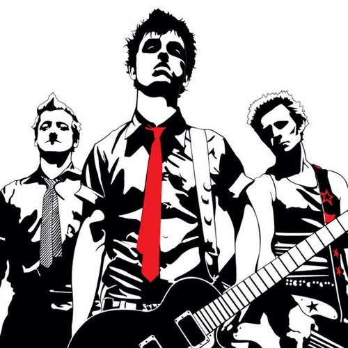
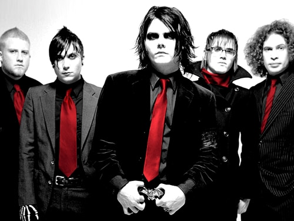

Green Day
Green Day es una banda estadounidense de pop punk123 y punk rock24 integrada inicialmente por tres miembros: Billie Joe Armstrong (guitarra y voz), Mike Dirnt (bajo y coros) y Tré Cool (batería y coros). El grupo originario de Berkeley,1011 California,
se gestó prematuramente en 1986 bajo el nombre de Sweet Children, con el baterista John Kiffmeyer (mejor conocido como Al Sobrante). En 1989 se cambiaron al nombre actual y poco después del lanzamiento de su primer álbum de estudio (39/Smooth),
Tré Cool reemplazó a Al Sobrante.1 Fue uno de los grupos que nacieron en el club 924 Gilman Street, sitio que frecuentaban bandas de punk rock locales. Sus primeras publicaciones se realizaron por medio del sello discográfico independiente
Lookout!,12 gracias a las exitosas ventas de sus primeros trabajos discográficos, se obtuvo una importante cantidad de admiradores. Algunos años después, en 1994 el conjunto firmó con Reprise Records, con este sello lanzaron el aclamado
Dookie.13Con este nuevo álbum el conjunto llevó el sonido de finales de la década de 1970 a la nueva generación, además, el álbum se convirtió en un éxito internacional y lleva vendidas más de treinta millones de copias en todo el mundo.


My Chemical Romance

My Chemical Romance fue una banda estadounidense de rock, formada en el año 2001 en el estado de Nueva Jersey, e integrada en la mayor parte de su historia por el vocalista Gerard Way, el bajista Mikey Way y los guitarristas Ray Toro y Frank Iero. En
marzo de 2013, la banda anunció su separación.12Su estilo musical ha sido asociado a los géneros rock, punk, pop punk, post-hardcore y emo. Entre las influencias que han citado están diversos artistas como MC5, Misfits, Black Flag, Queen,
Morrissey o Teenage Fanclub. La crítica, asimismo, ha dicho que la esencia de la banda recae en el drama,13 y que durante su carrera produjeron «un rock and roll de los más viscerales y dramáticos en la historia reciente.